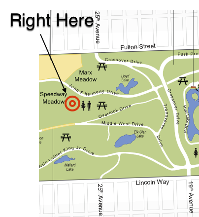

CAPTURE THE FLAG
WITH STUFF
IN GOLDEN GATE PARK
Golden Gate Park is this place.
Of course, the park is fairly sizable and we will be playing in a relatively small area of it. See the map below:

Walk up King to Market. Take the 5 bus outbound to 25th and Fulton then follow the map above.
There is parking along JFK drive and also on the streets north of the park. Other than that, Google is your friend.